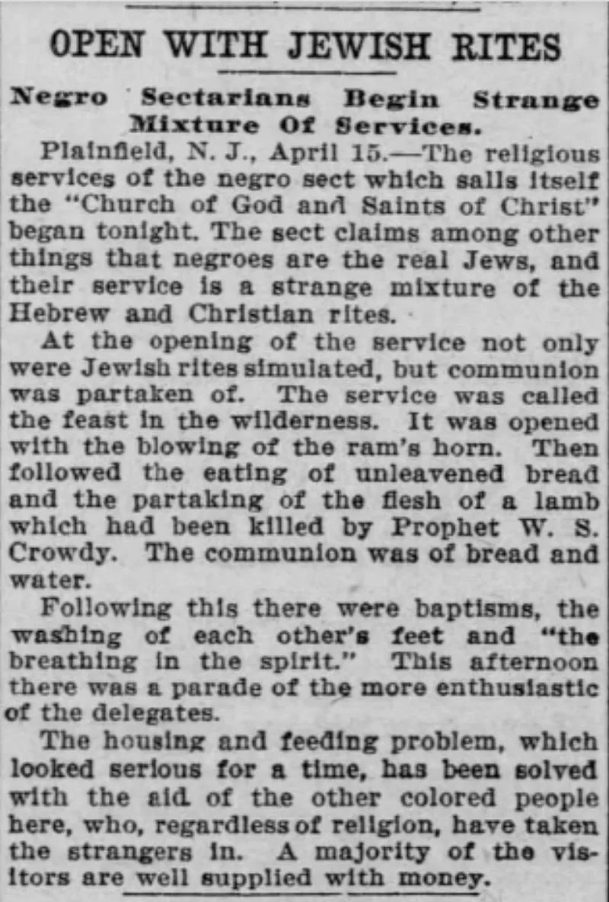

The camps state these facts themselves. You can make this point from their own teaching.
The movement's history is documented, recent and American. Frank Cherry founded a church in Chattanooga in 1886.
William Saunders Crowdy was born enslaved in Maryland in 1847 and served in the Union Army. In 1896 he founded the Church of God and Saints of Christ in Kansas.
Wentworth Matthew founded the Commandment Keepers in Harlem in 1919. Ben Ammi led his group to Israel in 1969.
That the age of an identity is not the age of an organisation. Israel did not begin in 1896 any more than the gospel began with the Reformation.
Crowdy and Matthew were recovering knowledge of a people, not founding one. That is exactly what a restoration looks like from the inside.
The facts. Nobody disputes the names or the dates — they are in the movement's own histories.
The disagreement is only about what they mean.
They admit this themselves. That means you can make this point entirely from their own sources, which is the only way it will be heard.
A recovered ancient identity with a documented founder in living memory is worth thinking about slowly. Ask about it with curiosity, not as a gotcha.
"When did the movement start teaching this, and who taught it first? I'd like to read them."

Israel did not begin in 1896. Josiah found the law after it was long lost.
Adherents draw a sharp line between the age of an identity and the age of an organisation. Israel did not begin in 1896. The gospel did not begin with the Reformation. Crowdy, Cherry and Matthew were not founding a people. They were recovering knowledge of one. That is what a restoration looks like after a curse took away name and memory.
They point to Josiah, who rediscovered the book of the law after generations of ignorance (2 Kings 22:8-13). They point to Ezra, reading the law to a people who wept because they had not known it (Nehemiah 8:9).
They also note that some strands are older, and not American. They cite the Beta Israel of Ethiopia, and West African communities with Jewish practice. A movement of the dispossessed will always look recent as an organisation, they argue. The dispossessed had no institutions to preserve.
They state this themselves. Ask when the teaching started, and who taught it first.
Graded admitted, because the facts are not in dispute. The movement's own histories name these founders and these dates. The restoration framing concedes them rather than contests them.
The Josiah analogy is fair as far as it goes. But it breaks at a specific point. Josiah rediscovered a document. Ezra read from a text that already existed. The One West additions have no recovered source. The 12 Tribes Chart, the Lashawan Qadash sounds and the tribal assignments appear first in 1970s Harlem. There is no manuscript, no earlier community, and nothing attested outside the movement.
The Beta Israel appeal also cuts the wrong way. That is a genuinely ancient community, with a continuous tradition, documented practice and its own texts. That is exactly the kind of evidence the camps cannot produce for themselves.